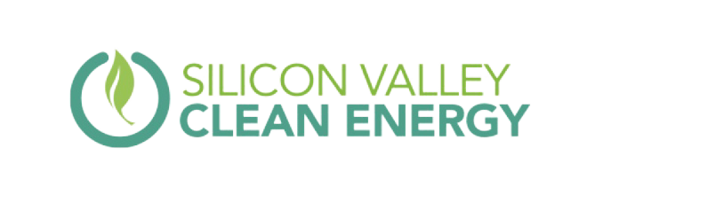

Past Events
What events has Tino Eco hosted/participated in?
July 2022
Cupertino Night Market
The Cupertino Night Market was the very first event of Tino Eco. Officers and members volunteered for 7 long hours from 3 pm to 10 pm spreading word about ClimateScience, engaged children in a spin the wheel fundraiser, and set up an art activity on the environment. Tino Eco successfully fundraised $127.50.

April 2023
Carbon Footprint Competition
The Carbon Footprint Competition held by Tino Eco aims to spread awareness on climate change and instill habits to reduce greenhouse gas emissions. There are a variety of tasks involving research, creation, and action that participants can complete to earn points for prizes.


THANK YOU TO OUR SPONSOR AND FISCAL SPONSOR
